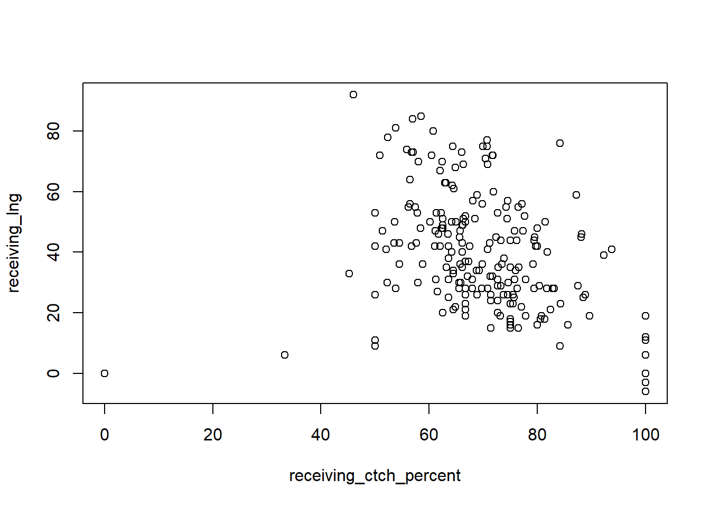
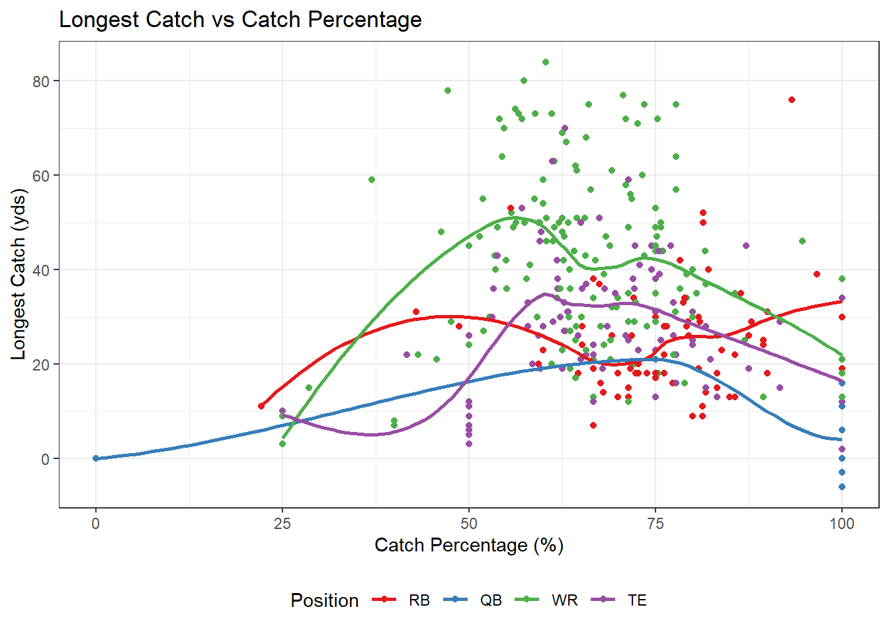
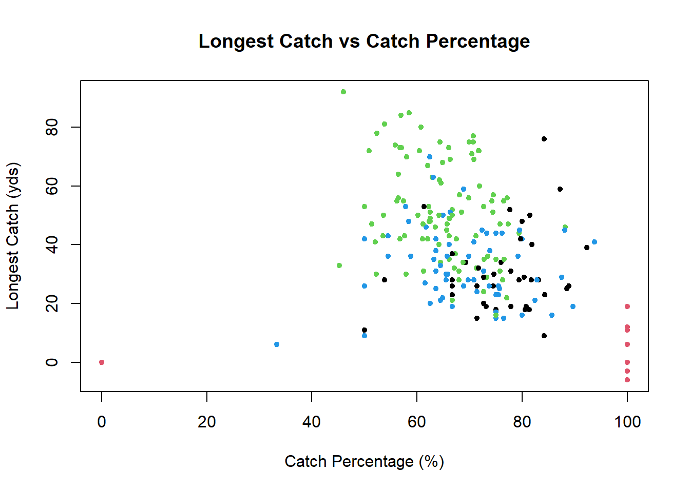
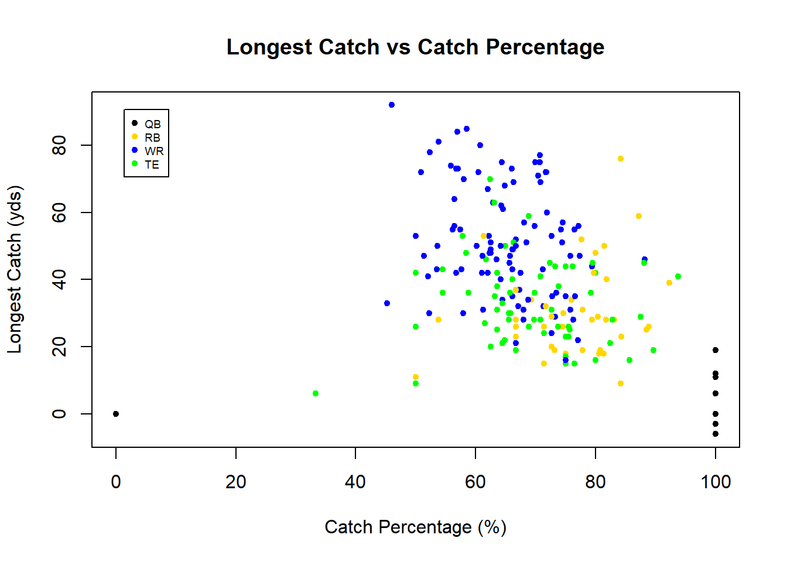

4.2 ggplot
ggplot(data = rush_receive, aes(x = age)) +
geom_histogram(binwidth = 2) +
labs(x = 'Age', y = 'Frequency', title = 'Distribution of Age') +
theme_bw()
ggplot(data = rush_receive, aes(x = age, fill = pos)) +
geom_histogram(binwidth = 2) +
facet_wrap(~pos) +
labs(x = 'Age', y = 'Frequency', title = 'Distribution of Age') +
theme_bw()
ggplot(data = rush_receive, aes(x = rushing_att, y = rushing_yds, color = pos, size = age)) +
geom_point(alpha = 0.7) +
geom_smooth(method = 'lm', formula = y~x) +
scale_color_brewer('Position', palette = 'Set1') +
labs(x = 'Rush Attempts', y = 'Rushing Yards', title = 'Rushing Yards vs Rush Attempts') +
theme_bw() +
theme(legend.position = 'bottom')
ggplot(data = rush_receive %>%
mutate(., yds = rushing_yds + receiving_yds),
aes(x = pos, y = yds, fill = pos)) +
geom_boxplot() +
scale_fill_brewer('Position', palette = 'Set1') +
labs(x = 'Po')